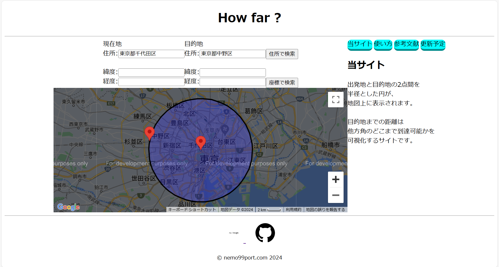

welcome!
product

How Far？
使用技術: javascript
出発地と目的地の2点間を半径とした円が、地図上に表示されます。
目的地までの距離は他方角のどこまで到達可能かを可視化するサイトです。
ScoreAggregation
使用技術: Java, SQLite
タイトル、スコア、タグを紐づけて登録、スコアを%表示するAndroidアプリ。
ランダムで表示やタイトル、タグでの検索等可能です。